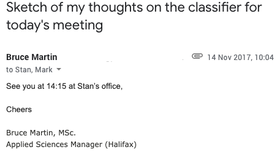
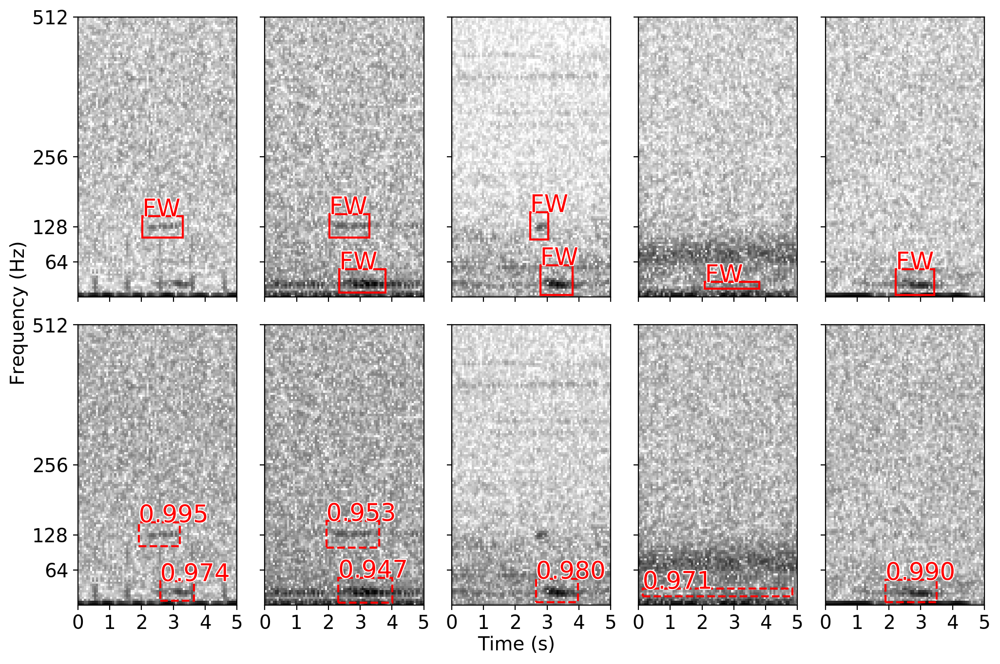
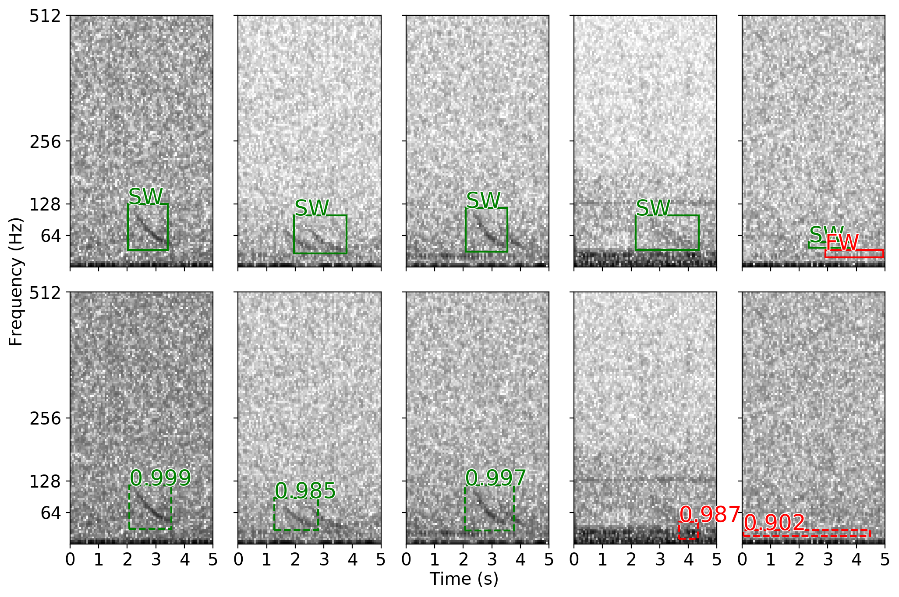
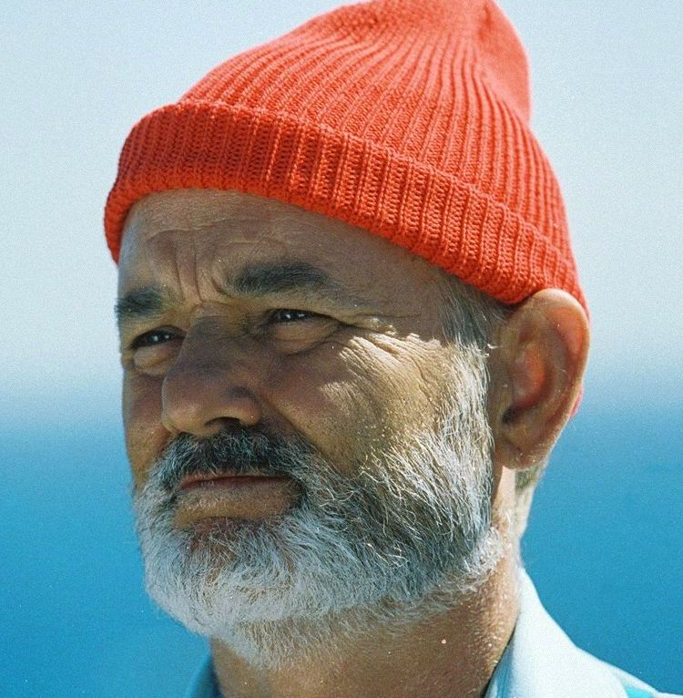
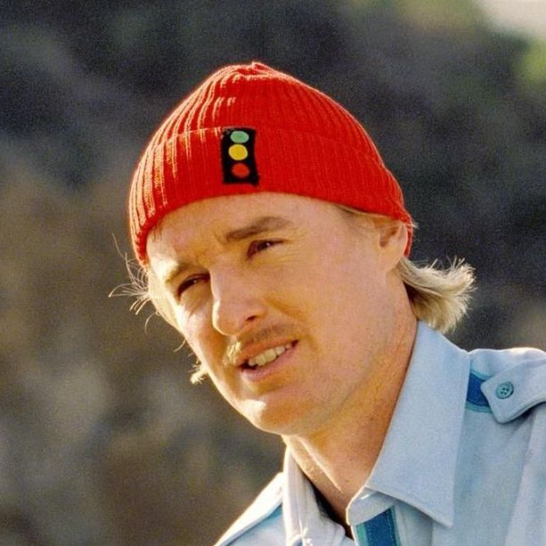
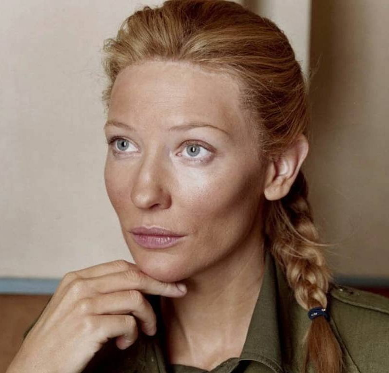
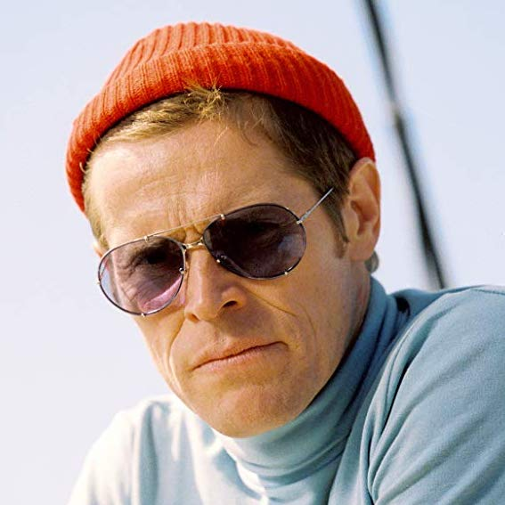

of
MERIDIAN Workshop — Victoria, BC — November 21, 2019
Detecting endangered baleen whales within acoustic recordings using R-CNNs, and how I got here...
Mark Thomas
Dalhousie University & JASCO Applied Sciences
Some background...

In late 2017/early 2018 I started working for JASCO on a detection and classification algorithm.
MammalNet:
- no detection involved → classify vocalizations to different species using pre-extracted contours
- eleven classes: beluga, blue, bowhead, fin, humpback, minke, right, and sei whales + walruses & bearded seals
- shallow ConvNet developed in Tensorflow: 3 convolutional layers + 2 fully connected layers
😴 OK results, but can we cut out the contour detector?
... some (continued) background
MammalNet v2: more net, fewer mammals
- trained on spectrograms instead of extracted contours
- to do more we need to turn it down from 11
-
fewer species: blue, fin, and sei whales + non-biological noise & ambient noise examples

- deeper nets: VGG-19 and ResNet-50 implemented in PyTorch
- detection can be accomplished by sliding the classifier over a sequence of spectrograms
- great performance! turns out: reducing your # of classes will have this affect
🤔 is this really doing "detection"?
Simonyan et al. "Very deep convolutional networks for large-scale image recognition." ICLR 2015
He et al. "Deep residual learning for image recognition." CVPR 2016
MammalNet v3: triple the v's, triple the nets
- there have been huge advancements to the SOTA in object detection and semantic/instance segmentation:
- in the frequency domain, marine mammal vocalization detection is more or less the same task!
- for v2 we had full bounding box annotations, but we only used the start/end times
- the underlying (neural net) architecture of v3 is a region-based ConvNet
screenshots taken from arXiv.org
Redmon et al. "You only look once: Unified, real-time object detection." CVPR 2016
He et al. "Mask r-cnn." ICCV 2017
Ren et al. "Faster r-cnn: Towards real-time object detection with region proposal networks." NeurIPS 2015
Region-based ConvNets
- some history: "R-CNN" → "Fast R-CNN" → "Faster R-CNN" → "Mask R-CNN"
Girshick et al. "Rich feature hierarchies for accurate object detection and semantic segmentation." CVPR 2014
Girshick "Fast r-cnn." ICCV 2015
Mask R-CNN
- part of the R-CNN family
- the SOTA for many tasks: object detection, semantic segmentation, instance segmentation
- composed of three nets
1. the feature extraction net
- a.k.a the "backbone"
- used for extracting meaningful features from your input
- users choice: ResNet, ResNeXt, VGG, MobileNet...
- we use: ResNet-50 and then a feature pyramid network
2. the region proposal net
- a second learned net
- as the name suggests: proposes regions of interest (RoIs) directly from the feature maps of the backbone
- RoIAlign: pooling method w/o quantization s.t. RoIs have the same size
3. the head net
- a third learned net
- provided the RoIs, computes a multi-task loss
- classification score (softmax loss) and bounding box regression (L1-loss)
... Mask R-CNN
Acoustic recordings
- very large collection of recordings off the coast of Atlantic Canada (Scotian Shelf)
- 20 stations in total that were sampled at 8kHz and 250kHz
- deployments took place in the summer/fall of 2015 and 2016
- average deployment duration was ≈1 year
- recorder depths ranged from 40 to 2000 meters
Training details
A few training details...
- the R-CNN was trained using four NVIDIA P100 GPUs each with 16GB of memory
- the batch size was set to 4 (one per GPU) — remember, batches grow within the net
- used stochastic gradient descent (SGD) with momentum=0.9 as an opt. routine
- the initial learning rate was set to 0.003 and decayed by a factor of 10 after learning plateaued
Experimental results
| species | label | instances | APIoU=0.5 | mAP[.5:.95] | ARIoU=0.5 | mAR[.5:.95] |
|---|---|---|---|---|---|---|
| overall | - | 2813 | 82.1 | 41.8 | 91.9 | 54.8 |
| blue whales | BW | 487 | 85.7 | 52.8 | 96.2 | 70.9 |
| fin whales | FW | 2099 | 75.3 | 30.8 | 89.9 | 40.0 |
| sei whales | SW | 227 | 85.4 | 41.9 | 89.7 | 49.4 |
* metrics are as described in the COCO Detection Challenge
... experimental results

... experimental results
... experimental results
... experimental results
R-CNN detections for a recent recording from the Gaspé recorded in September 2019

Future work I'm doing now
-
semi-supervision for overcoming the partially labelled data problem
- novel approach I am hoping to write up in the new year
- benchmark against other SOTA approaches (e.g. MixUp & MixMatch)
-
unsupervised learning of acoustic signatures
- unsupervised pre-training for the backbone
- (normalizing) flow models for acoustic data
-
interpretability methods for CNNs trained on acoustic data
- can we describe saliency maps in terms of a signal?
Thanks × 253 to my colleagues at JASCO and Dalhousie
-

Dr. Stan Matwin
-

Dr. Bruce Martin
-

Katie Kowarski
-

Briand Gaudet
stills taken from "The Life Aquatic with Steve Zissou". Wes Anderson. Buena Vista Pictures, 2004
Thank you for listening!
 |
 |
 |